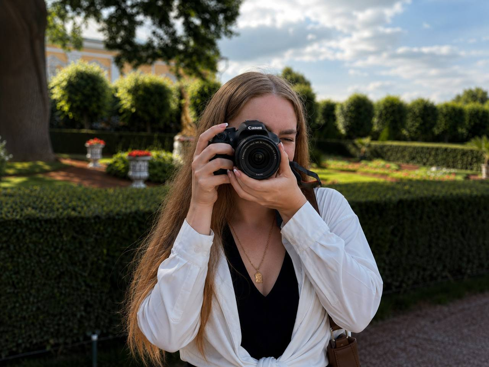
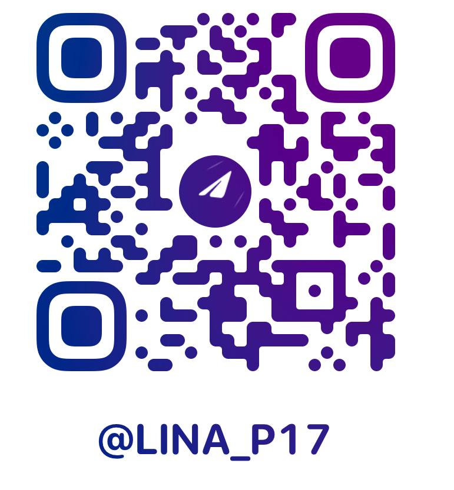

ЧТО СНИМАЮ
- ◯ ПОРТРЕТЫ
- ⌇ LIFESTYLE
- ♡ LOVE STORY
- ⌂ ГОРОД И АРХИТЕКТУРА
- ✧ АТМОСФЕРНЫЕ КАДРЫ
- ⌑ ПРЕДМЕТНАЯ СЪЕМКА
- ❀ ПРИРОДА

Фотография стала частью моей жизни в тот момент, когда я создала свою первую фотокнигу.
Тогда я поняла, что один кадр способен сохранить гораздо больше, чем просто изображение. Это настроение, эмоции и истории, к которым хочется возвращаться снова.
Сегодня для меня фотография это возможность остановить мгновение и показать красоту такой, какая она есть.
Люблю естественный свет, искренние улыбки, живые эмоции и атмосферу, которую невозможно повторить дважды.
Каждая съемка начинается с общения. Для меня важно, чтобы человек чувствовал себя спокойно и комфортно, поэтому я не стремлюсь к идеальным позам и помогаю поймать настоящие эмоции.
Создавать фотографии, которые будут хранить воспоминания спустя годы. Кадры, к которым хочется возвращаться снова и снова.
♡Обсуждаем идею и настроение.
Подбираем локацию и образ.
Проводим съемку легко и без напряжения.
Отбираю лучшие кадры и выполняю обработку.
Вы получаете готовые фотографии.
Меня вдохновляют люди, путешествия, архитектура, природа, свет и мелочи, которые делают момент особенным.

САМЫЕ КРАСИВЫЕ ФОТОГРАФИИ
ЭТО ТЕ, В КОТОРЫХ ЧЕЛОВЕК ОСТАЕТСЯ СОБОЙ.